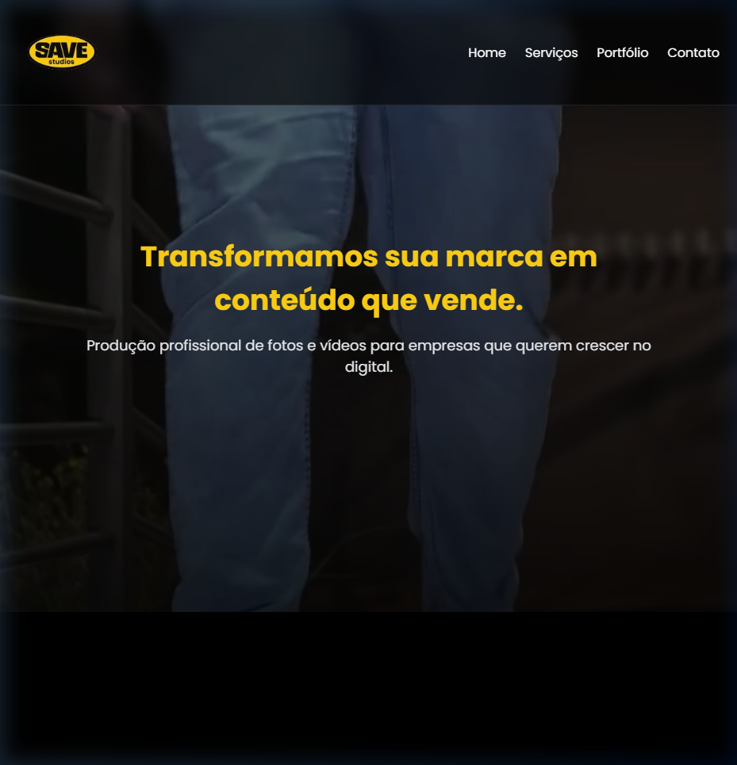
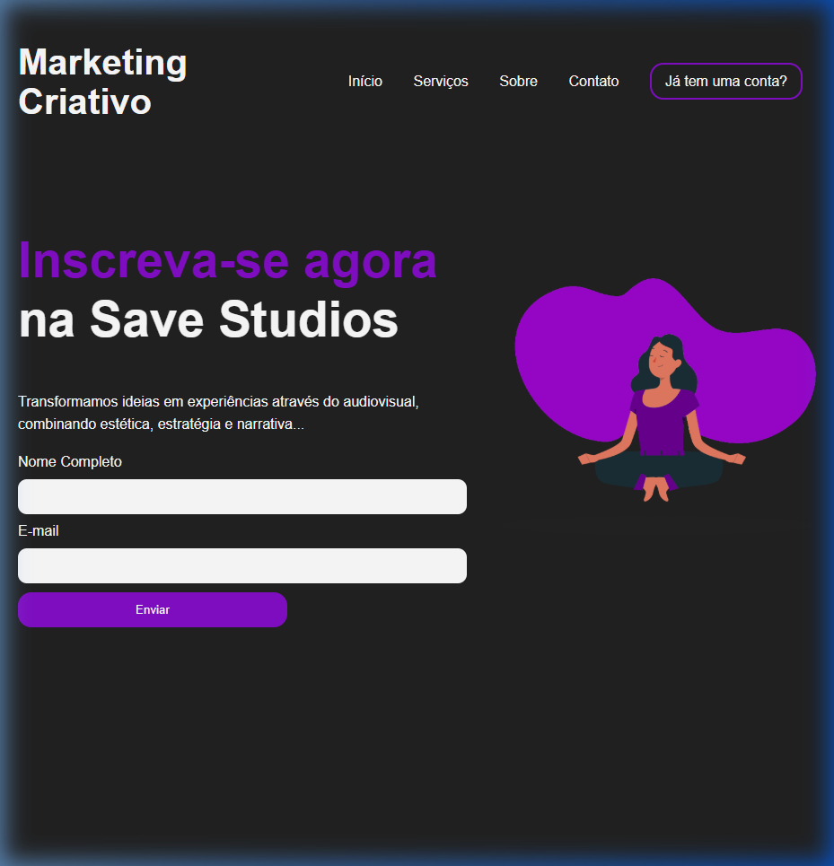
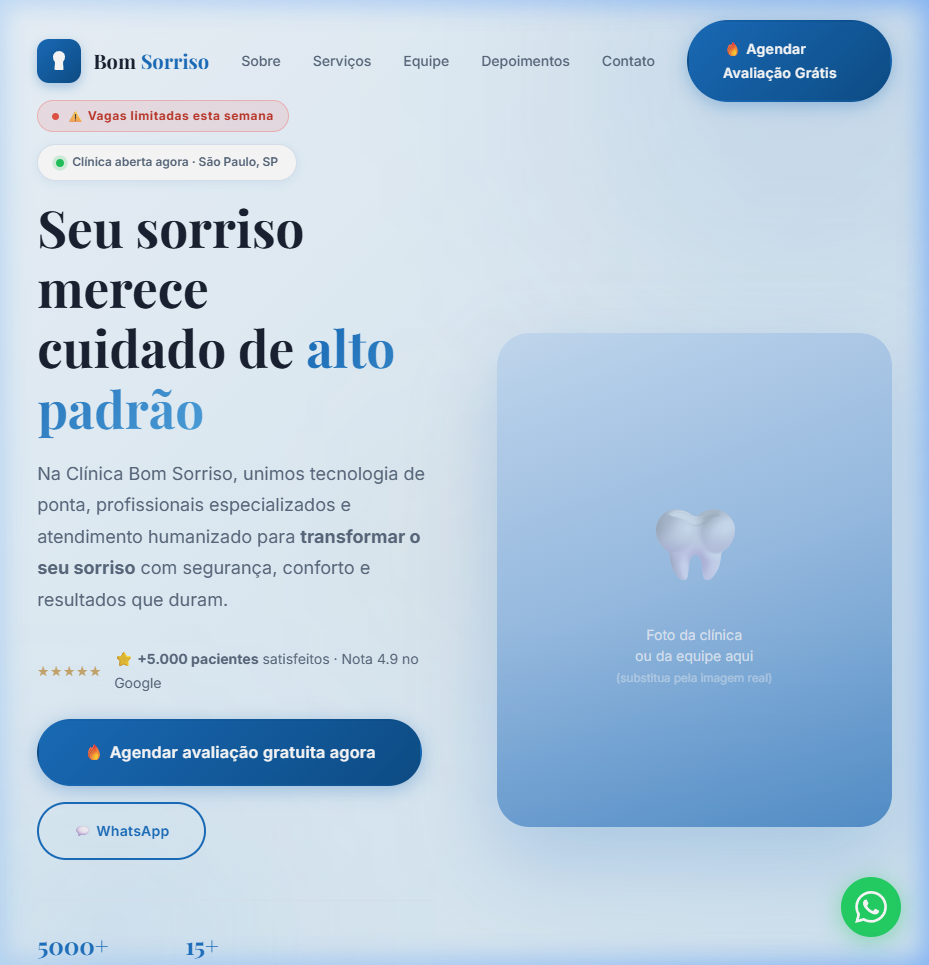
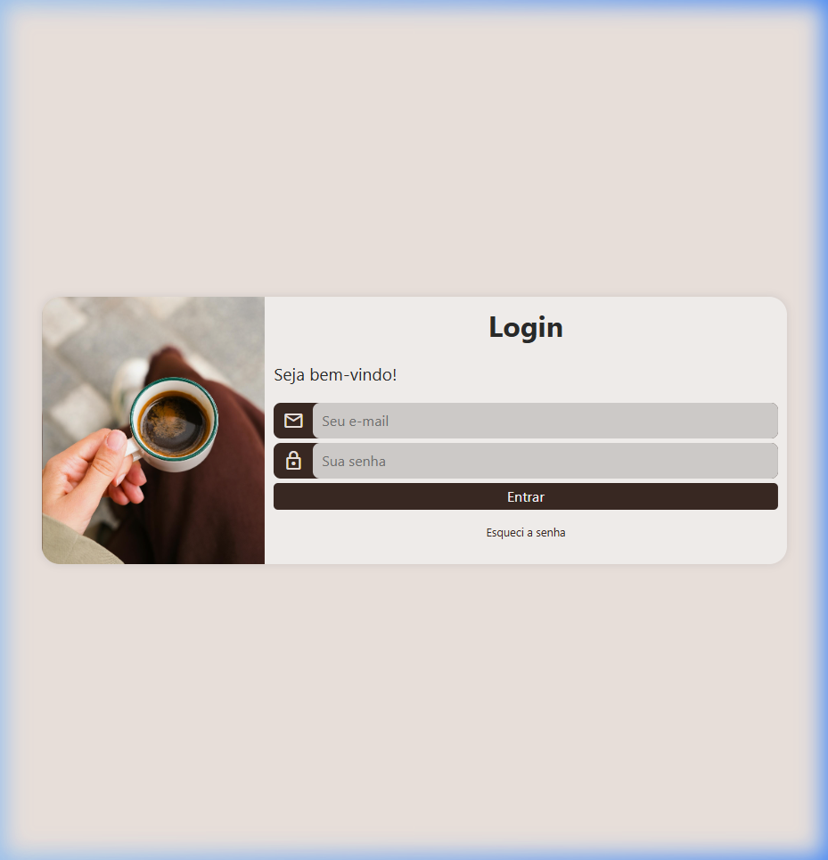

HTML5
Marcação semântica, acessibilidade e estruturação otimizada para SEO. Foco em construir bases sólidas para a web.
Desenvolvedor Front-end
Construo interfaces de alta performance e focadas em conversão com HTML, CSS e JavaScript. Transformo designs complexos em código limpo, escalável e pronto para produção.
Profissional
Sou um desenvolvedor front-end com foco total na criação de interfaces modernas, performáticas e responsivas. Minha especialidade é transformar layouts em código semântico e escalável usando HTML5, CSS3 e JavaScript.
Trato cada projeto com mentalidade de produto: não apenas escrevo código, mas me preocupo com a experiência do usuário (UX), otimização de performance e boas práticas do mercado (Mobile-First, SEO, acessibilidade).
Tenho um perfil de aprendizado rápido, autonomia e foco em resultado. Estou preparado para agregar valor imediato ao seu time e evoluir continuamente entregando soluções de alta qualidade técnica.
Minha Stack
Tecnologias que utilizo para construir interfaces escaláveis e de alta conversão.
Marcação semântica, acessibilidade e estruturação otimizada para SEO. Foco em construir bases sólidas para a web.
Domínio de Flexbox, CSS Grid, animações, variáveis e responsividade avançada (Mobile-First).
Lógica de programação, manipulação do DOM, eventos e integração de funcionalidades interativas.
Controle de versão rigoroso, commits semânticos e boas práticas de colaboração em projetos.
Interfaces consistentes em todos os dispositivos, priorizando a usabilidade e a retenção do usuário.
Atenção aos detalhes, hierarquia visual, espaçamentos consistentes e animações que melhoram a experiência.
O que eu construí
Cada projeto foi construído do zero. Nada de templates copiados.

Landing page premium para estúdio criativo. Hero com animações, seção de serviços e formulário de contato com redirecionamento para WhatsApp. Foco em conversão e performance visual.

Landing page criativa com design moderno, tipografia impactante e seções bem estruturadas. Layout responsivo construído do zero com CSS puro e animações suaves.

Landing page profissional para clínica odontológica. Design limpo e confiável, com seções de serviços, depoimentos e CTA de agendamento. Totalmente responsiva.

Tela de login moderna com design premium, efeito glassmorphism e microinterações. Formulário com validação visual e experiência de usuário refinada.
Quer ver mais? Todos os projetos estão no meu GitHub.
Ver GitHub completoTem uma ideia, projeto ou oportunidade? Me chama que a gente conversa.